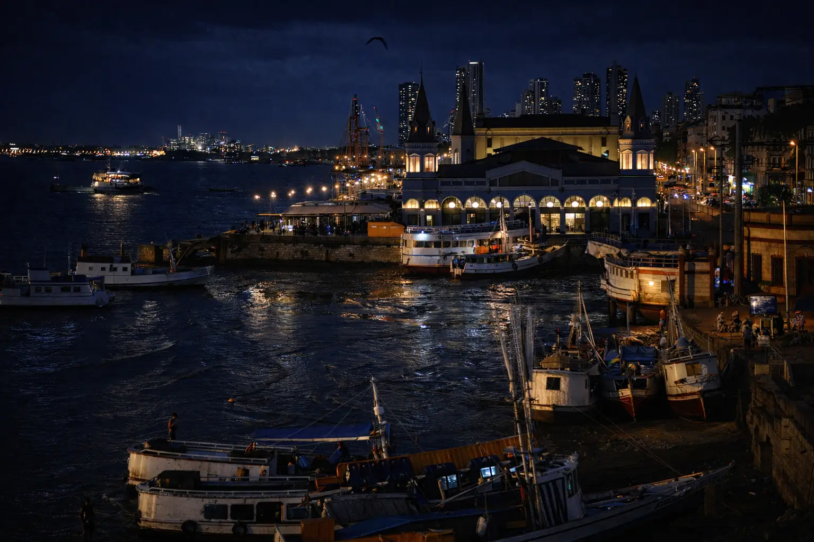
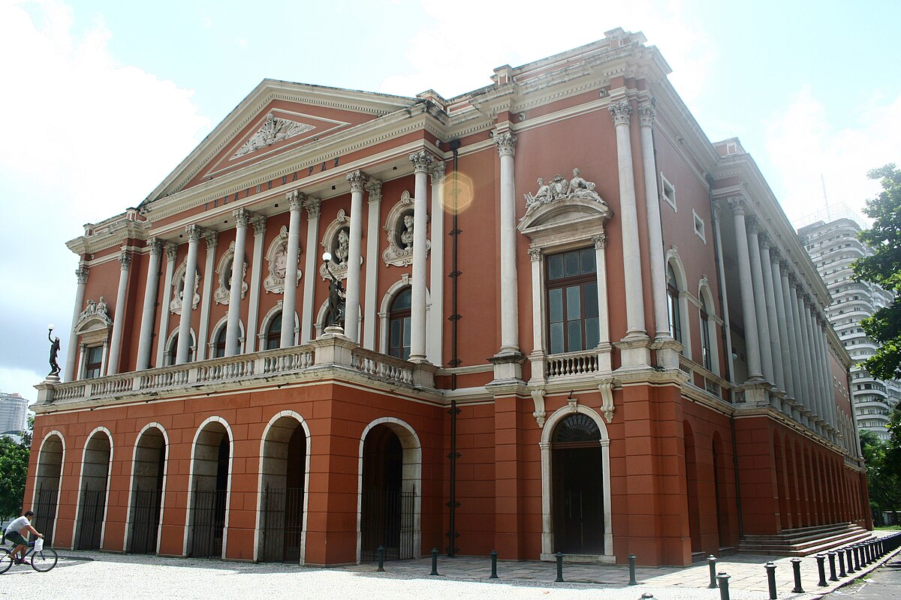
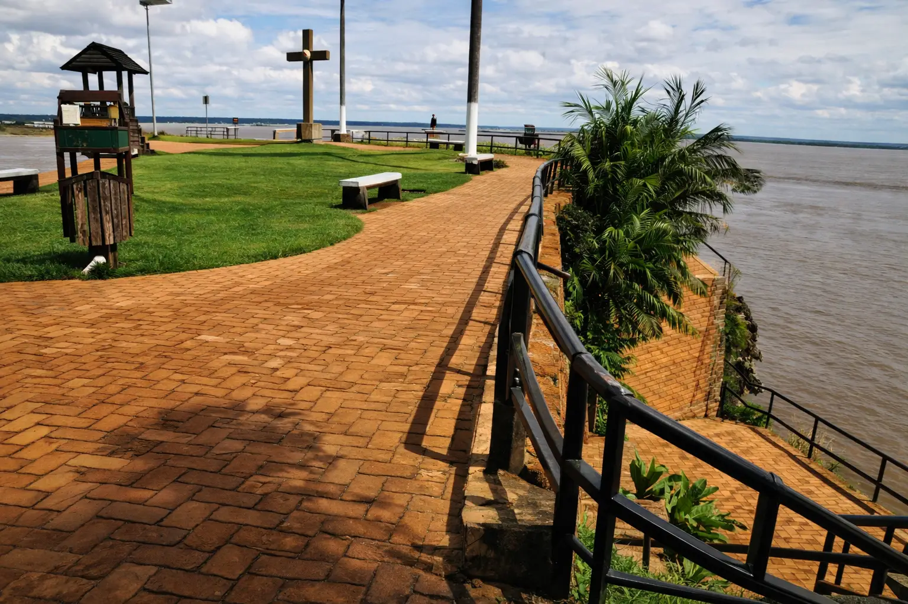

BELEZAS NATURAIS E PONTOS TURÍSTICOS
Dê uma volta pelos principais cartões postais do Gigante Amazônico,e descubra
onde serão suas próximas férias.




avançar
📜HISTÓRIA ⚔ ️
Inicie uma aventura e desvende a origem paraense,pois só quem tem entendimento
do passado,compreenderá o presente,e poderá impedir erros no futuro.